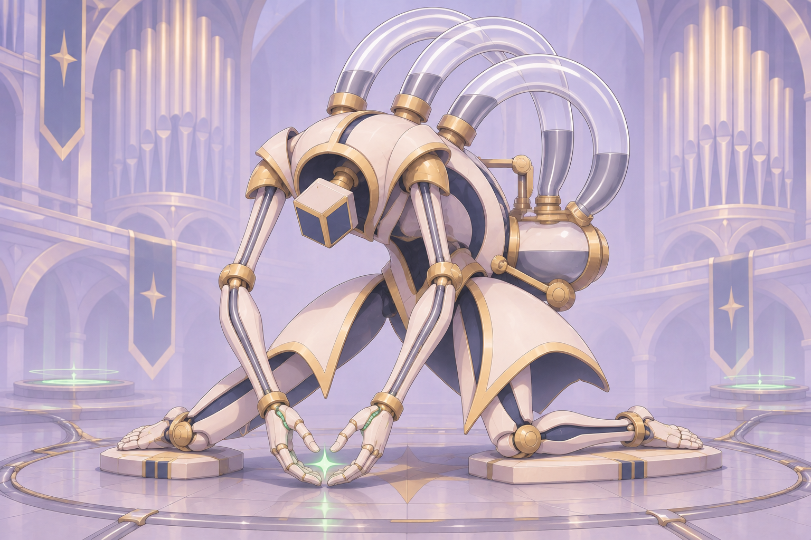
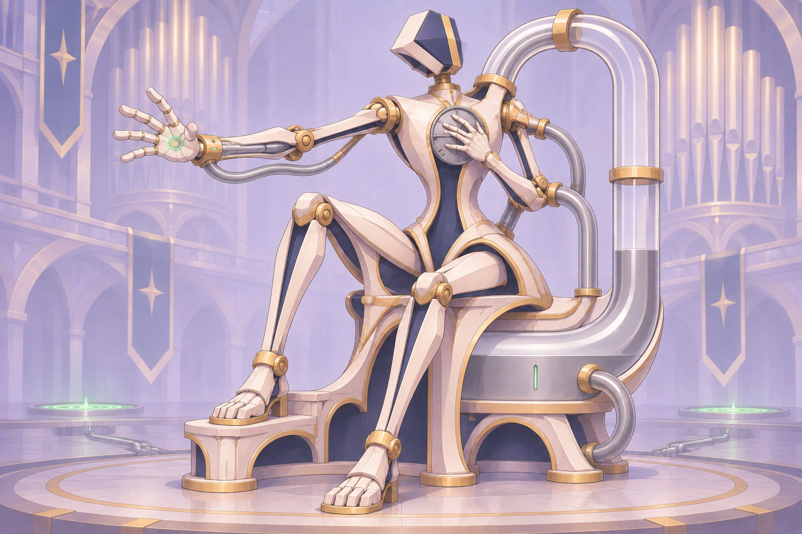
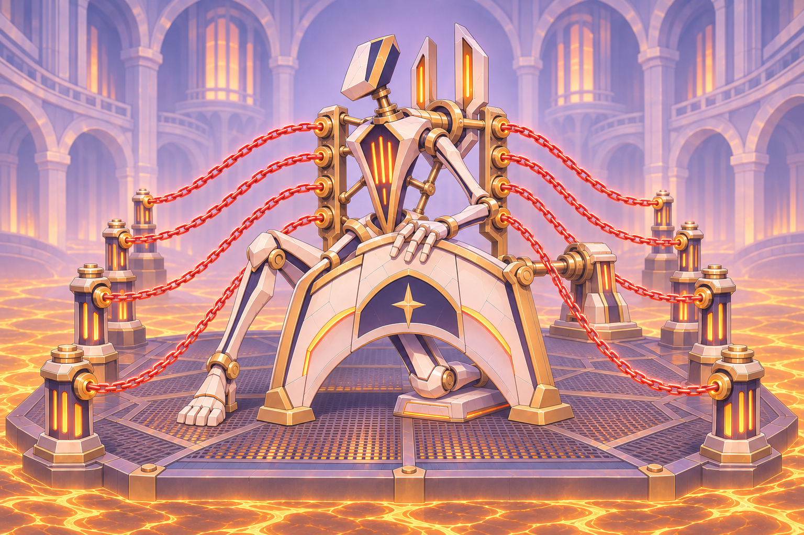
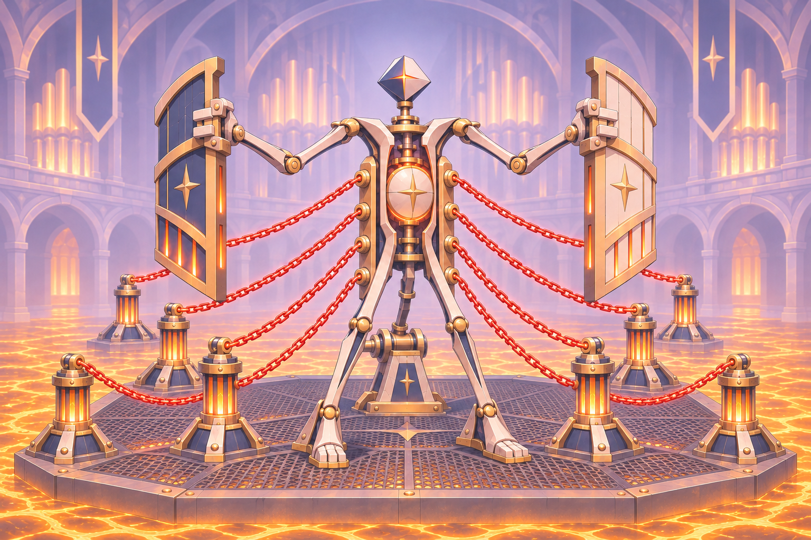

아스텔라 제2부 · 의례체 추가 15안
1~5스테이지마다 새로운 의례체 세 안을 제작했습니다. 사용자가 선호한 이전 2스테이지 의례체의 봉인된 기하학 머리, 긴 분절 사지, 큰 외피와 노출 연결 구조를 발전시키고 각 층의 기능과 자세를 달리했습니다. 이미지를 누르면 1536 × 1024 원본 PNG가 열립니다.
Stage01 · 기억을 흘리는 정찰병


Stage02 · 끝나지 않는 진혼곡의 무희


Stage03 · 얼어붙은 혈관의 연금술사





Stage04 · 영원히 타오르는 가마의 수호자





Stage05 · 무너진 천구를 떠받치는 부단장


제작: 내장 image_gen. 단일 전신 컨셉샷이며 실제 3D 메시나 회전 렌더는 아닙니다. 전체 프롬프트 · 공통 아트 방향